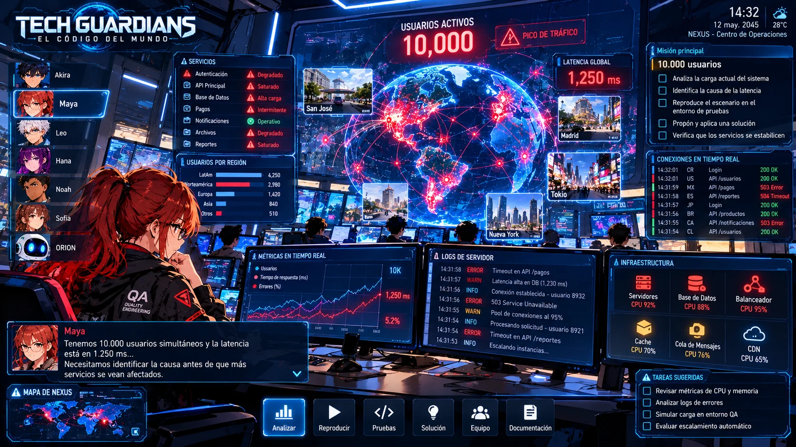

Una aventura narrativa tecnológica donde investigar, probar y decidir importa más que combatir. El jugador se integra al equipo para comprender incidentes de NEXUS, reunir evidencia y resolver problemas que afectan servicios y personas.
Exploración 3DInvestigaciónPuzles de sistemasEstrategia ligeraDecisiones
NEXUS presenta anomalías simultáneas en transporte, salud, educación, comunicaciones y servicios financieros. El jugador cambia entre especialistas, analiza el impacto global y reúne la primera evidencia de una crisis coordinada.

RENDIMIENTO · CARGA
10.000 usuarios
Una carga masiva dispara la latencia y degrada servicios. El jugador observa métricas, logs y recursos de infraestructura, reproduce el escenario y decide cómo estabilizar NEXUS basándose en evidencia.
DISEÑO DE EXPERIENCIA
Cómo se juega
Investigar
Observar síntomas, recopilar logs, capturas, respuestas API, métricas y reportes de usuarios para construir hipótesis.
Probar
Reproducir condiciones, variar datos y precondiciones, ejecutar simulaciones y comparar resultados esperados y obtenidos.
Decidir
Corregir, bloquear, desplegar, revertir o esperar según la evidencia, el riesgo técnico y el impacto humano.
Precios
Elija su acceso
Acceso digital a TECH GUARDIANS y sus contenidos publicados.